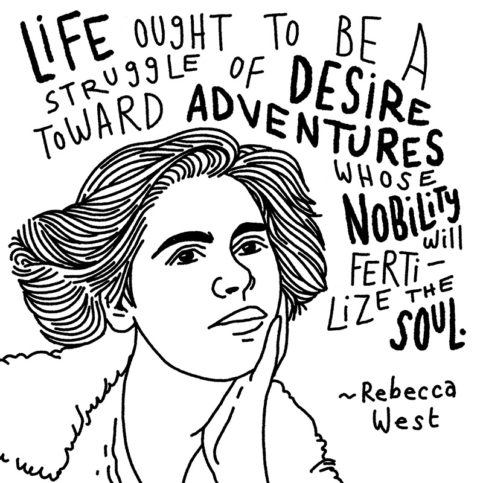
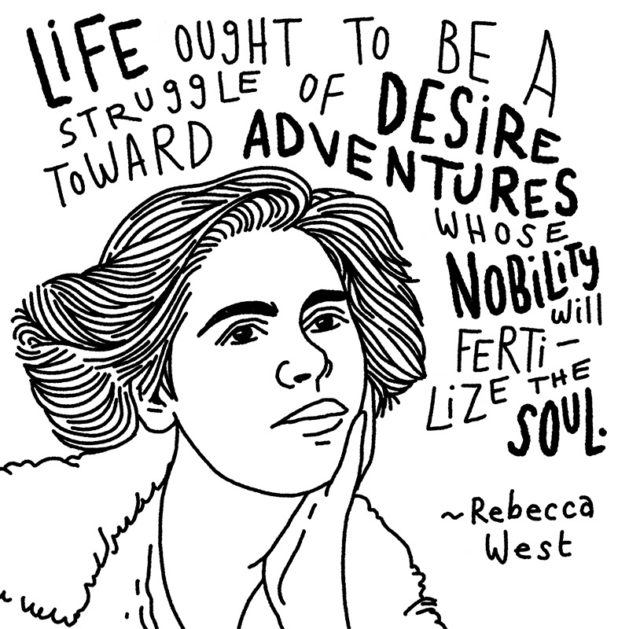

Quoted
Sketching famous people and their famous quotes on my lunch breaks.
In the summer of 2021, I was looking for inspiration.
I was going through one of those periods where, in true human fashion, I just wasn't sure what I should be doing with my life. What was my purpose, exactly? Was I squandering my precious little time here doing the wrong thing?
Should I quit my job and draw birds for a living?
After thinking about how to put my existential crisis to good use, I landed on the idea of looking up encouraging quotes and turning the best ones into illustrations. Yes. This was a good idea. I'd find inspiration and make stuff at the same time.
I Googled my way to brainyquote.com and dug in.
 



The only time I could consistenly find in my schedule was my lunch breaks, so each of these was done in roughly an hour. A few took a little longer, but my goal was finished, not perfect.
For about a month, I cranked out one illustrated quote in Procreate every day. (There are forty-four in total, but I only included a few here because you get the idea.)
I read hundreds of quotes that month. I found the inspriation and encouragement I was looking for. And I enjoyed the hell out of scribbling on my iPad for a few minutes each day. I even created an Instagram account for the project, foolishly thinking I'd keep making these things for, like, ever?
My existential crisis eventually passed. That one, anyway.
Whether reading those quotes—or drawing them—helped me come to peace with my life choices, I'm not sure. But looking back, I am sure that navigating an existential crisis by making stuff was a pretty good idea.